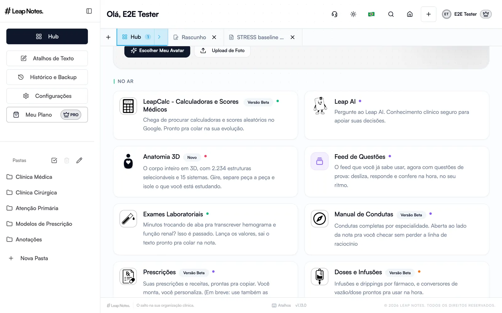
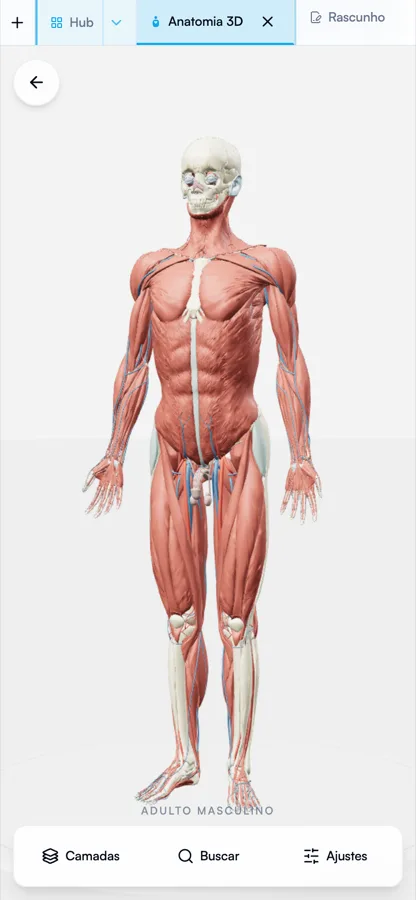
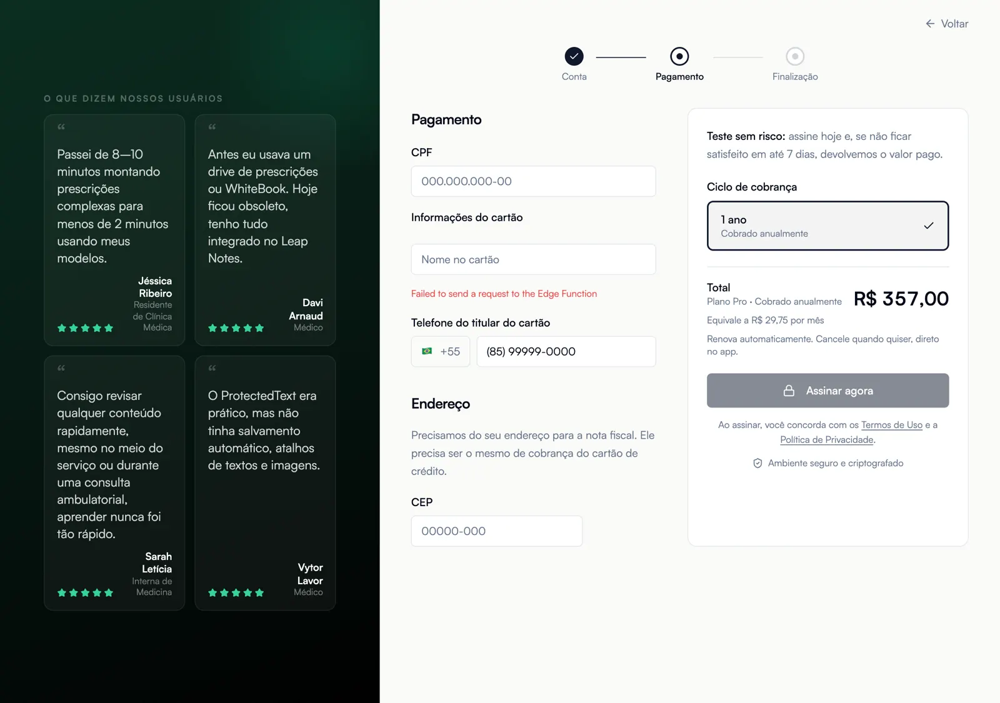

no ar
O caderno clínico de mais de mil médicos e estudantes de medicina.
Cofundador e engenheiro principal · nov/2025 até hoje
O Leap Notes é onde internos, residentes e médicos guardam condutas, prescrições e resumos que usam no plantão. Comecei o produto com o time de fundadores e sou responsável por toda a engenharia, do editor à cobrança.
- Editor rico sobre TipTap com colaboração em tempo real, tabelas, imagens e exportação para PDF e DOCX.
- Anatomia 3D com 2.234 estruturas selecionáveis, calculadoras clínicas, feed de questões e o Leap AI, um assistente com conhecimento clínico dentro da nota.
- Modelo freemium e checkout próprio com três gateways de pagamento (cartão, Pix e assinatura), plano vitalício por leva e painel de observabilidade para os sócios.
- Mesmo código no navegador e no celular via Capacitor, com 46 edge functions em TypeScript cuidando de webhooks, uploads e e-mails.
- 0+usuários reais, médicos e estudantes
- 0sessões por semana
- 0faculdades de medicina com turmas usando
- 0PRs minhas em produção
ReactTypeScriptNode / Deno edge functionsSupabaseTipTap + YjsStripe · Asaas · AbacatePayCapacitorPostHogSentry